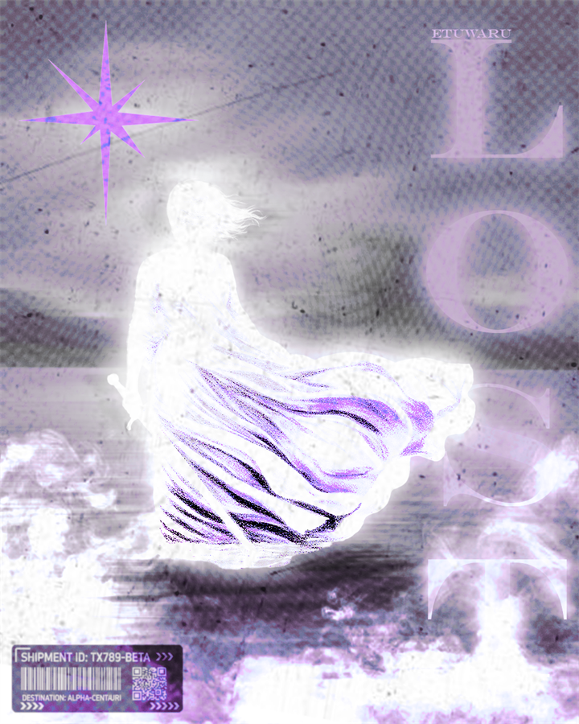
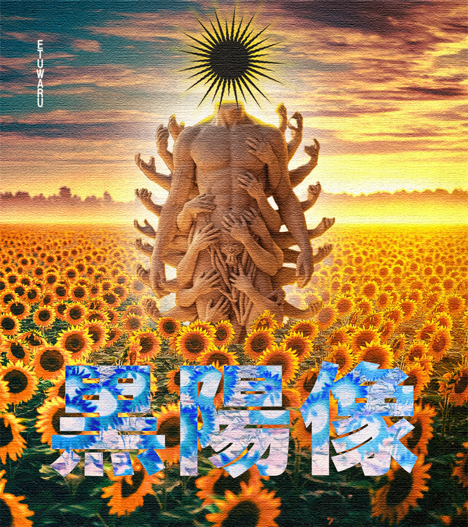

Affiche
Fall
Projet d'affiche de festival avec une composition frontale et un jeu de contrastes.

Exploration
Fly
Recherche autour du mouvement, de la texture et de l'impact de l'image.

Composition
Who is this star
Une direction minimaliste qui mise sur la forme, le vide et la tension visuelle.
Cinema
Spider
Affiche expressive inspirée des codes du cinéma et de la typographie forte.

Atmosphere
Nénuphar
Une image plus calme, construite sur le contraste et la sensation de profondeur.

Recherche
Koichi Sato
Une expérimentation graphique centrée sur la matière, le cadre et le rythme.

Narration
Lost Woman
Un travail plus narratif avec un langage visuel plus brut et plus instinctif.

Assemblage
Tournsol
Composition inspirée de figures mythologiques et de collages éditoriaux.